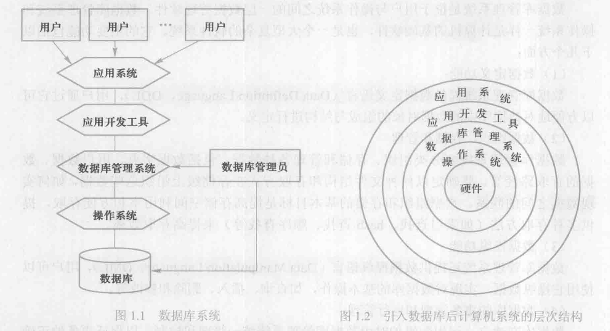
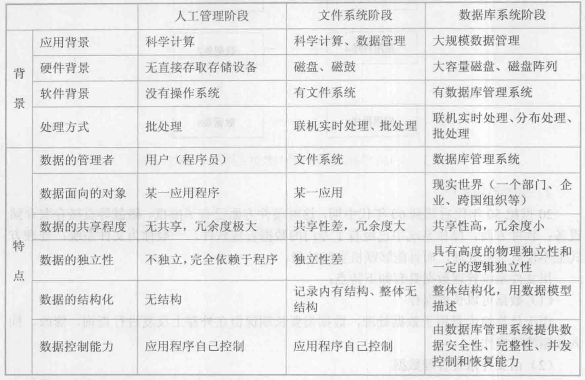
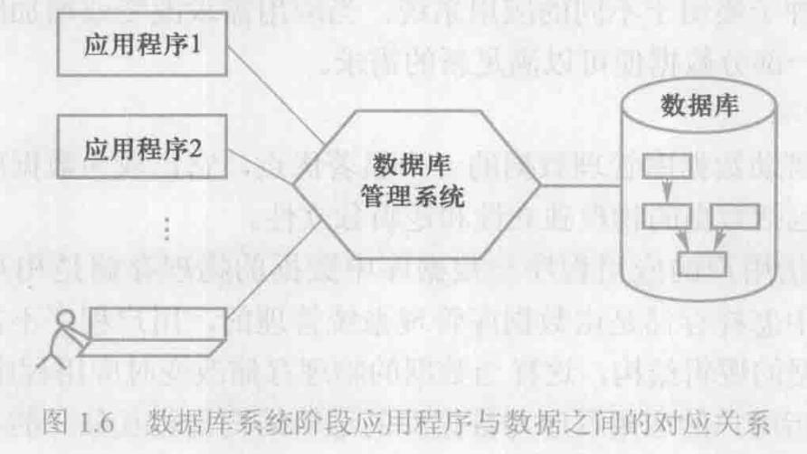
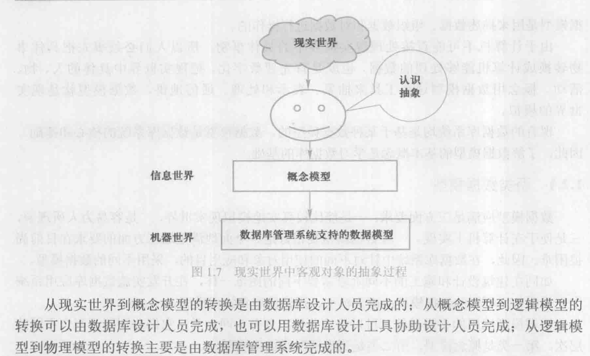
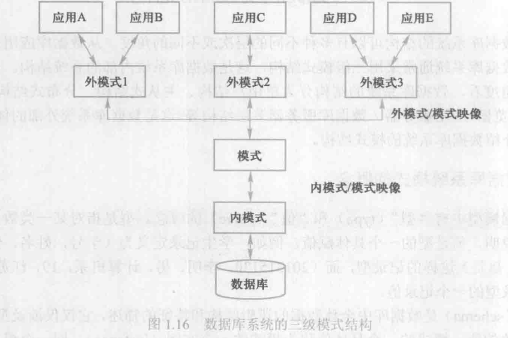
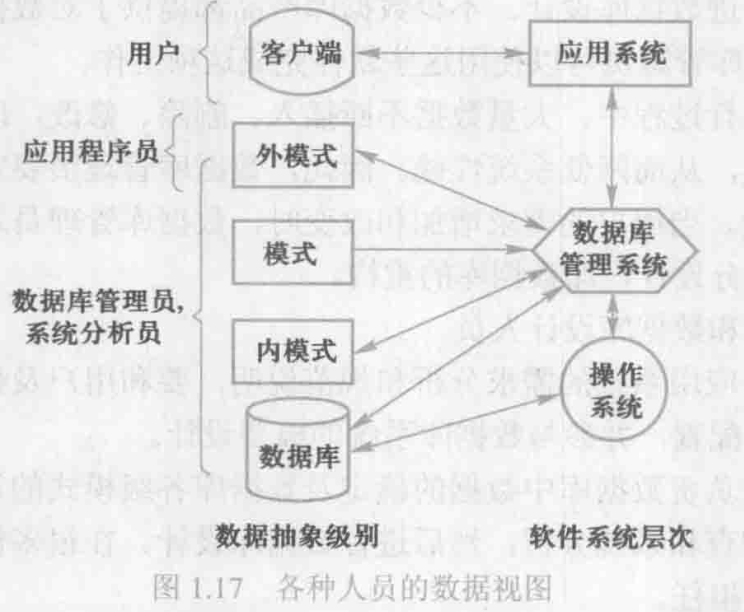

数据管理基础概论

绪论
概念
数据
数据是描述事物的符号记录
语义
语义是数据的含义，与数据密不可分
数据库
$Database, DB$
数据库是长期储存在计算机内、有组织的、可共享的大量数据的集合。数据库中的数据按一定的数据模型组织、描述和储存，具有较小的冗余度(redundancy)，较高的数据独立性(data independency)和易扩展性(scalability)，可以为各种用户共享
数据库管理系统
$Database~Management~System,DBMS$
数据库管理系统是计算机的基础软件，具有以下功能：
- 数据定义功能，即提供数据定义语言(Data Definition Language, DDL)，用于定义数据库中数据对象的组成和结构
- 数据组织、存储和管理，重点是如何实现数据之间的联系
- 数据操纵功能，提供数据操纵语言(Data Manipulation Language, DML)，实现对数据库的基本操作
- 数据库的事务管理和运行管理
- 数据库的建立和维护功能，包括初始数据输入、转换，数据库的转储、恢复、重组织、性能监视、分析功能，通常由实用程序或管理工具完成
- 其他功能，包括与其他软件系统的通信，与另一个数据库管理系统或文件系统的数据转换，异构数据库之间的互访和互操作
数据库系统
$Database~System,DBS$
数据库系统是由数据库、数据库管理系统及其应用开发工具、应用程序和数据库管理员(Database Administrator, DBA)组成的存储、管理、处理和维护数据的系统

数据管理技术的发展

人工管理阶段
人工管理数据的特点如下：
- 数据不保存
- 应用程序管理数据
- 数据不共享
- 数据不具有独立性
即应用程序与数据一一对应，数据使用完毕就撤销，并且数据的存储等都需要应用程序的设计者来处理
文件系统阶段
随着硬件方面磁盘、磁鼓等直接存取设备的出现，操作系统中也出现了专门的数据管理软件，即文件系统，其特点如下：
- 数据共享性差、冗余度大（文件仍然是面向应用的，即不同的程序使用相同数据时不能直接使用同一文件）
- 数据独立性差（数据文件依赖于程序，程序的变动不会被隔离）
程序员在使用文件系统时仍然需要进行大量文件操作，工作量大，编程复杂，开发速度慢
数据库阶段
从文件系统到数据库系统标志着数据管理技术的飞跃，程序员的开发效率大大提高，其特点如下：
- 数据结构化，数据库系统实现了整体数据的结构化，是数据库的主要特征之一，也是数据库系统与文件系统的本质区别。其中整体结构化是指数据库中的数据不只是针对某一应用，而是面向整个组织或企业；并且数据之间是有联系的
- 数据共享性高、冗余度低且易扩充，数据共享可以大大减少数据冗余，节约存储空间，避免数据之间的不相容性和不一致性；数据库面向整个系统的特点使添加新的应用变得容易，因此系统弹性大，易于扩充
- 数据独立性高，数据独立性可以分为物理独立性与逻辑独立性，其中物理独立性是指用户的用户程序与数据库中数据的物理存储相互独立，即用户程序不需要了解数据在数据库中是怎样存储的；逻辑独立性是指用户的应用程序与数据库的逻辑结构相互独立，即数据的逻辑结构发生改变时用户程序可以不变
数据的并发共享导致了数据库管理系统必须提供以下的数据控制功能：
- 数据的安全性(security)保护，防止不合法使用造成的数据泄密和破坏
- 数据的完整性(integrity)保护，数据完整性包含数据的正确性、有效性和相容性
- 并发控制
- 数据库恢复，数据库管理系统必须具有将数据库从错误状态恢复到某一已知正确状态（也称为完整状态或一致状态）的功能

数据库的出现使信息系统从以加工数据的程序为中心转向围绕共享的数据库为中心的新阶段
数据模型
数据模型(data model)是对现实世界数据特征的抽象，是数据库系统的核心和基础
构建数据模型的方法是先将现实世界抽象为信息世界，然后将信息世界转换为机器世界

概念模型
$Conceptual~Model$
也称为信息模型，按用户的观点对数据和信息建模，主要用于数据库设计
实体（entity）
客观存在并可相互区别的事物称为实体
属性（attribute）
实体所具有的某一特性称为属性
码（key）
唯一标识实体的属性称为码
实体型（entity type）
用实体名及其属性名集合来抽象和刻画同类实体，称为实体性，例如学生（学号，性别，姓名）
实体集（entity set）
同一类实体的集合
联系（relationship）
实体内部的联系通常是指组成实体的各属性之间的联系；实体之间的联系通常是指不同实体集之间的联系，实体间的联系有一对一，一对多，多对多等多种类型
概念模型通常使用实体-联系方法（Entity-Relationship approach），即E-R图（E-R diagram）来描述
逻辑模型和物理模型
其中逻辑模型按计算机系统的观点对数据建模，主要用于数据库管理系统的实现；物理模型是对数据最底层的抽象，它描述数据在系统内部的表示方式和存取方法，面向计算机系统。
数据模型的组成要素
数据模型通常由数据结构、数据操作和数据的完整性约束条件三部分组成
数据结构
数据结构描述数据库的组成对象以及对象之间的联系，是所描述的对象类型的集合，是对系统静态特性的描述
数据操作
数据操作是指对数据库中各种对象的实例允许执行的操作的集合，包括操作及有关的操作规则
数据的完整性约束条件
数据的完整性约束条件是一组完整性规则，用于限定符合数据模型的数据库状态以及状态的变化，以保证数据的正确、有效和相容
常用的数据模型
常用的数据模型有层次模型(hierarchical model)，网状模型(network model)，关系模型(relationship model)，面向对象数据模型(object oriented data model)，对象关系数据模型(object relational data model)，半结构化数据模型(semistructure data model)，其中层次与网状模型统称为格式化模型
格式化模型中数据结构的基本单位是基本层次联系，即两个记录以及它们之间的一对多（包含一对一）联系，其中位于联系始点的称为双亲节点，终点的称为子女节点
层次模型
满足①有且仅有一个节点没有双亲结点，即根节点②根节点以外的节点有且仅有一个双亲结点的基本层次联系集合，每个节点表示一个记录类型，记录类型之间的联系用节点之间的连线（有向边）表示，支持查询，插入，删除和更新操作，其优点有①结构简单清晰②查询效率高③提供良好的完整性支持
网状模型
网状数据模型的典型代表是DBTG系统，即CODASYL系统，满足①允许一个以上的节点无双亲②一个节点可以有多于一个双亲，其优点有①能够更直接地描述现实世界②性能良好，存取效率较高
关系模型
关系（relation）
对应于一张表
元组（tuple）
表中的一行
属性（attribute）
表中的一列
码（key）
也称为码键，是某一个可以唯一确定一个元组的属性
域（domain）
一组具有相同数据类型的值的集合，属性的取值来自于某个域
分量
元组中的一个属性值
关系模式
对关系的描述，格式为关系名（属性1，属性2，…，属性n），关系模型要求关系必须规范化，即关系的每一个分量都必须是一个不可分数据项
关系模型中的数据操作是集合操作，操作对象和操作结果都是关系，其数据操作是描述性的
数据库系统结构
数据库系统通常都采用三级模式结构，提供两级映像功能
数据库系统模式
数据模型中有型和值的概念，模式(schema)是数据库中全体数据的逻辑结构和特征的描述，只是对于型的描述，而不涉及值，类似于抽象类；而模式的一个具体值称为模式的一个实例(instance)
模式相对稳定，而实例相对变动
数据库系统的三级模式结构

模式
也称为逻辑模式，是数据库中全体数据的逻辑结构和特征的描述，是所有用户的公共数据视图。数据库管理系统提供模式数据定义语言来严格定义模式
外模式
也称为子模式或用户模式，是数据库用户所能见和使用的局部数据的逻辑结构和特征的描述，是数据库用户的数据视图，与某一应用有关的数据的逻辑表示
内模式
也称为存储模式，一个数据库只有一个内模式，是数据物理结构和存储方式的描述，是数据在数据库内部的组织方式
二级映像与数据独立性
外模式/模式映像
对于每一个外模式，数据库都有一个外模式/模式映像，当模式发生改变时，由数据库管理员对各个外模式/模式映像作相应改变，使外模式保持不变，进而使基于外模式编写的应用程序不需要作出改变，即数据与程序的逻辑独立性，简称数据的逻辑独立性
模式/内模式映像
数据库的模式/内模式映像是唯一的，定义了数据全局逻辑结构与存储结构之间的对应关系。当数据库的存储结构发生改变时，由数据库管理员对模式/内模式映像作相应改变，使得模式保持不变，进而使得应用程序可以保持不变，即隔离变化，保证了数据与程序的物理独立性，简称数据的物理独立性
数据库系统的组成
硬件平台和数据库
数据库系统对该模块的要求为：
- 足够大的内存以存储系统和程序
- 足够大的磁盘或磁盘阵列以存放数据库
- 较高的通道能力以保证数据传送率
软件
主要包括的软件有：
- 数据库管理系统
- 支持数据库系统运行的操作系统
- 与数据库接口的高级语言编译系统
- 以数据库管理系统为核心的应用开发工具
- 为特定应用环境开发的数据库应用系统
人员

数据库管理员
$Database~Administrator, DBA$
其职责如下：
- 决定数据库中的信息内容和结构
- 决定数据库的存储结构和存取策略
- 定义数据的安全性要求和完整性约束条件
- 监控数据库的使用和运行
- 数据库的改进、重组和重构
系统分析员和数据库设计人员
系统分析员负责应用系统的需求分析和规范说明，确定系统的软硬件配置，参与数据库的概要设计
数据库设计人员则负责数据库中数据的确定和数据库各级模式的设计
应用程序员
应用程序员负责设计和编写应用系统的程序模块，以及相应的调试和安装
用户
指最终用户(end user)，通过系统的用户接口使用数据库，最终用户可以分为三类：偶然用户（不常），简单用户（经常但使用UI接口）和复杂用户（频繁且能够使用DSL语言）